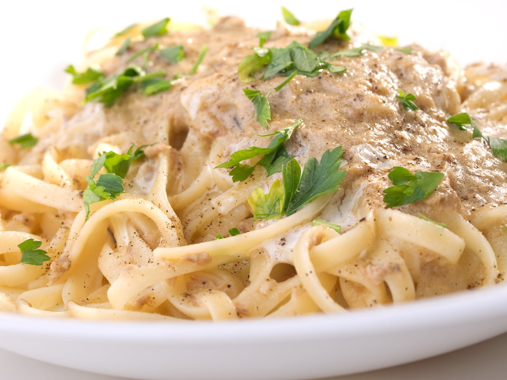

Nudeln mit Thunfischsoße

Rezept für Nudeln mit Thunfischsoße a la Max
Nudeln mit Thunfischsoße sind ein Rezept aus der Kindheit von Max Ebbing, welches sehr lecker schmeckt und weitesgehend unbekannt ist.
- 500g Nudelön
- 1 Dose Thunfisch
- 600ml Milch
- 1 Packung 8-Kräuter (Iglo)
- 1 EL Worcerstershire Sauce
- 1 Teelöffel Kräutersalz
- 2 EL Gemüsebrühe
- 75g Butter
- 75g Mehl
Zubereitungsschritte
- Einen Topf mit Wasser aufsetzen und zum kochen bringen. Anschließend die Nudeln hinzufügen und 12 Minuten lang kochen.
- Butter in einem zweiten Topf zum schmelzen bringen, Mehl hinzufügen und auf niedriger Hitze mindestens 5 Minute köcheln lassen. Anschließend die 600ml Milch hinzufügen und bei höherer Temparatur aufkochen.
- Restliche Zutaten hinzufügen und mindestens 15 Minuten lang kochen lassen.